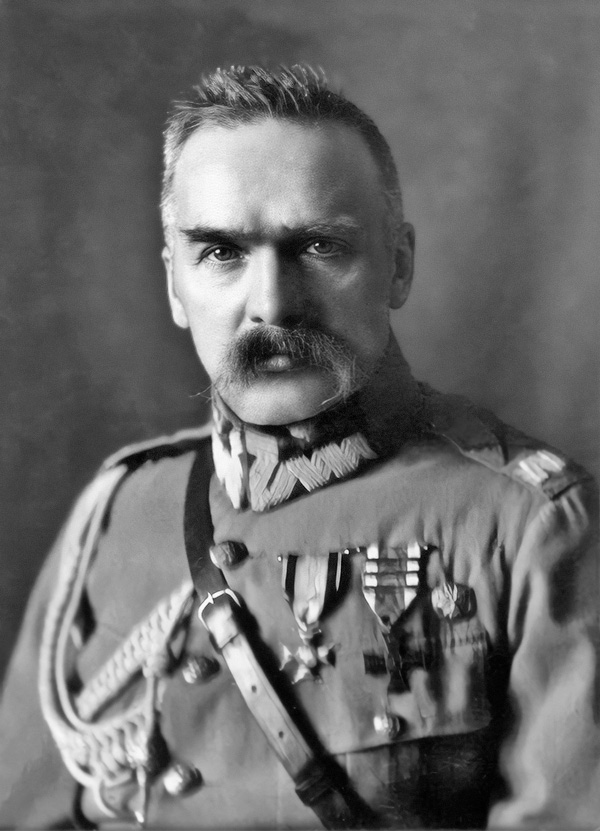

Święto Niepodległości
11 listopada to wyjątkowe święto dla Polski, obchodzone dla uczczenia odzyskania niepodległości w 1918 roku.
PO 123 LATACH ZABORÓW
Jest to dzień wolny od pracy i polacy świętują chociażby idąc na MARSZ NIEPODLEGŁOŚCI
11 listopada to wyjątkowe święto dla Polski, obchodzone dla uczczenia odzyskania niepodległości w 1918 roku.
PO 123 LATACH ZABORÓW
Jest to dzień wolny od pracy i polacy świętują chociażby idąc na MARSZ NIEPODLEGŁOŚCI